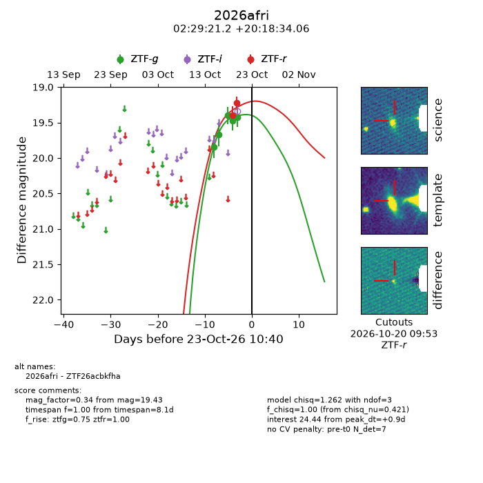
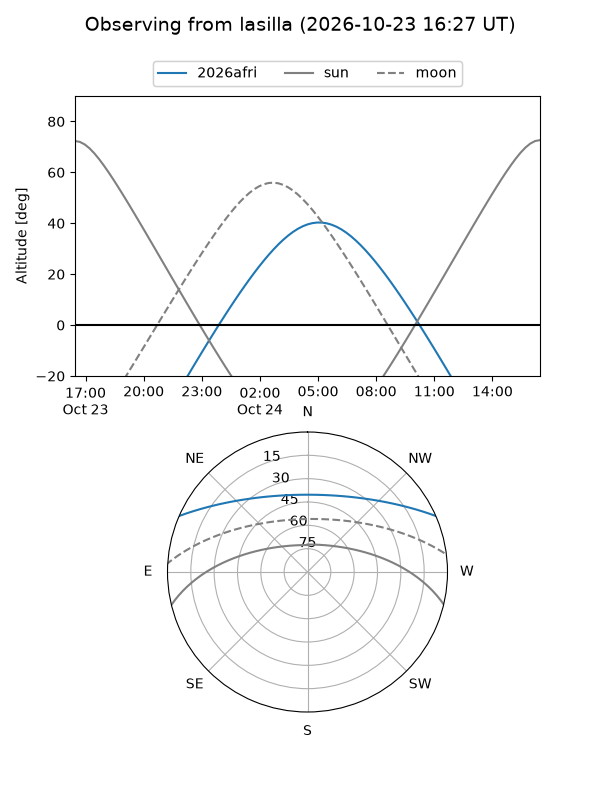
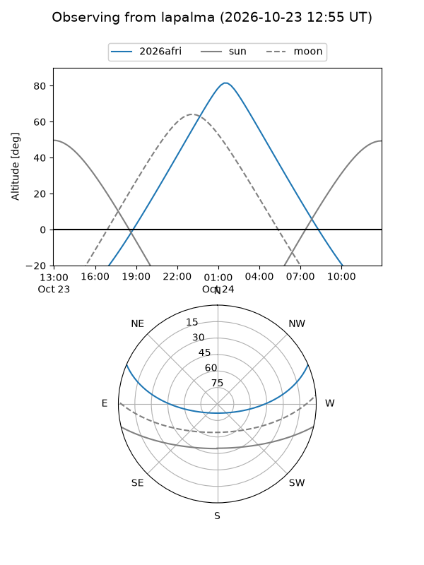
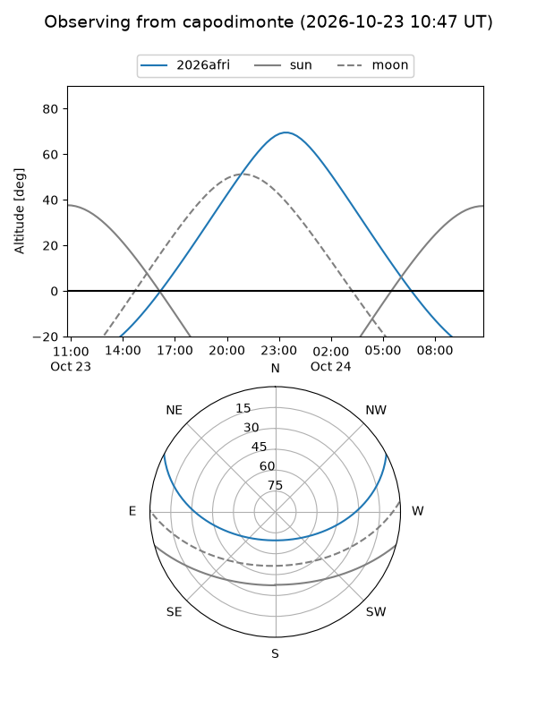
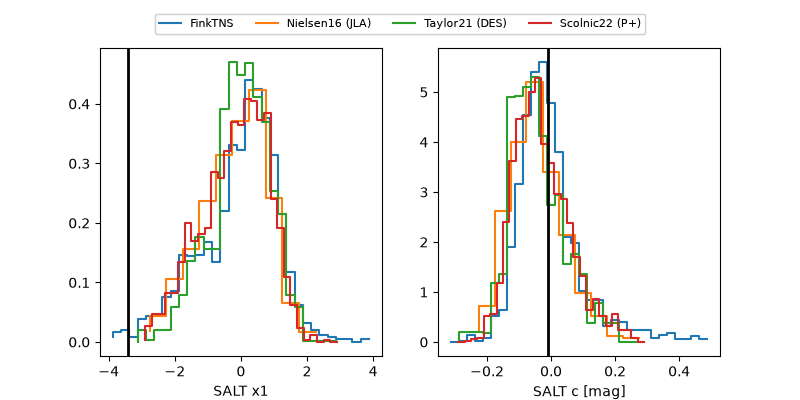

2026afri
Target 2026afri at 2026-10-23 10:42
Aliases and brokers:
FINK-ZTF: ztf.fink-portal.org/ZTF26acbkfha
Lasair-ZTF: lasair-ztf.lsst.ac.uk/objects/ZTF26acbkfha
ALeRCE-ZTF: alerce.online/object/ZTF26acbkfha
YSE-PZ: ziggy.ucolick.org/yse/transient_detail/2026afri
TNS name: wis-tns.org/object/2026afri
Direct TNS query: direct search
alt names
ZTF26acbkfha (ztf,fink_ztf)
2026afri (tns,yse)
Coordinates:
equatorial (ra, dec) = 37.3382,+20.30946
equatorial (HMS+DMS) = 02:29:21.18,+20:18:34.06
galactic (l, b) = (152.0342,-36.96793)
Flags:
peak dt: +0.9
Photometry:
last ztfg=19.43, ztfr=19.23
5 ztfg, 2 ztfr detections
Lightcurve

Visibility



Additional plots
